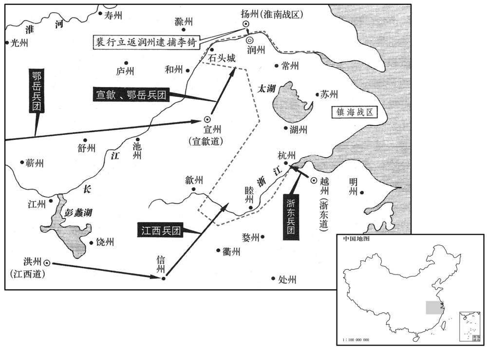
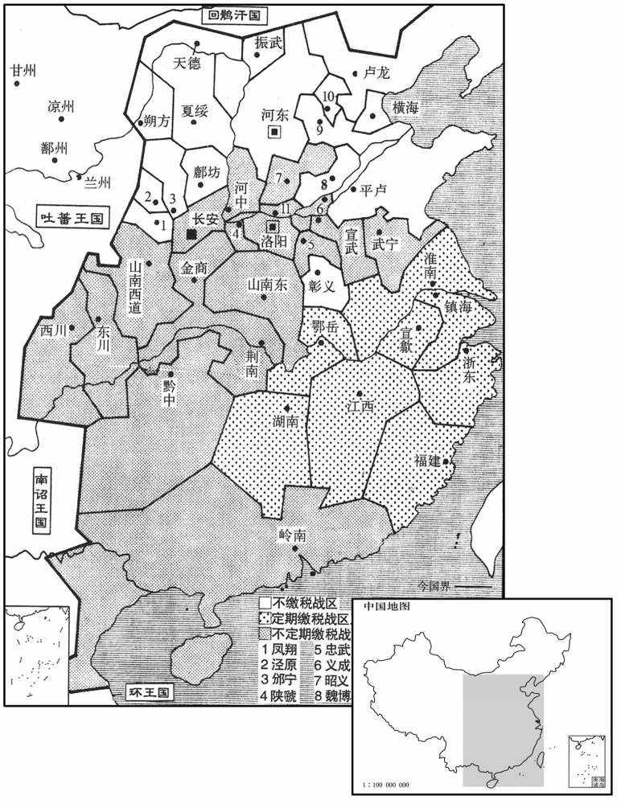

公元807年资治通鉴：本年记事、原文与白话对照
按原书编年位置阅读；追叙和史论不等于本年发生的事件。白话采用所据译本，缺译不以生成译文补齐。
卷237 · 本年记事
公元807年 · 唐宪宗昭文章武大圣至神孝皇帝元和二年
二年〔（丁亥、八○七）〕
上传原文的注释括号有异常，字符原样保留；无法可靠划分的段落默认全文显示。
本年事件索引（现代整理）
- 宪宗祭祀圜丘并大赦天下
- 杜佑因年老获特许减少入朝次数
- 杜黄裳兼任河中、晋绛慈隰节度使
- 邕州击败黄少卿叛军并俘获其首领
- 范希朝任朔方、灵、盐节度使
- 房式奉命调解幽州、成德、义武三镇争端
- 密王李绸去世
- 藩镇因夏州杨惠琳、蜀中刘辟败亡而震惧
- 王澹代管镇海军务，被李锜亲兵杀害
- 李锜上表称军变杀死留后王澹和大将赵琦
- 朝廷诏令讨伐李锜，诸道军队从不同方向进发
- 高崇文奏请调任，武元衡继任西川节度使
- 李师道病重，命高沐、李公度考察将佐人选
- 高崇文在玄武大败刘辟军
- 顺宗安葬于丰陵
- 宪宗册立郭氏为贵妃
- 裴垍、李绛建议将李锜家财赐给浙西百姓抵税
- 卢从史暗中勾结王士真、刘济，表面请求出兵讨伐
- 李绛劝宪宗勿轻信郑絪泄露卢从史任命之事
- 李绛劝宪宗勿因少数谏官失实而压制言路
- 朝臣请上尊号睿圣文武皇帝，宪宗准许
- 白居易以诗讽谏时事，获召入翰林
- 宪宗劝宰相有异议要多次进谏
- 高崇文兼同平章事并统领邠宁、京西诸军
- 于拐为儿子于季友求娶皇女，宪宗许婚
- 李吉甫撰成《元和国计簿》，汇总天下户口赋税

本年形势与背景参考图
春，正月，辛卯，上祀圜丘；赦天下。
春季，正月，辛卯（初三），宪宗祭祀圜丘，大赦天下。
上以杜佑高年重德，礼重之，常呼司徒而不名。佑以老疾，请致仕；诏令佑每月入朝不过再三，因至中书议大政；他日听归樊川。〔杜佑治亭观于樊川，与宾客置酒为乐。〕
宪宗因杜佑年迈，品德高尚，以隆重的礼数对待他，经常称呼他为司徒，而不直呼其名。杜佑因年老多病，请求退休，宪宗颁诏令杜佑每月来朝廷朝见不超过两三次，并趁此机会前往中书省计议重大的政务。其他日子准许他回到樊川府第。
门下侍郎、同平章事杜黄裳，有经济大略而不修小节，故不得久在相位。乙巳，以黄裳同平章事，充河中、晋、绛、慈、隰节度使。己酉，以户部侍郎武元衡为门下侍郎，翰林学士李吉甫为中书侍郎，并同平章事。吉甫闻之感泣，谓中书舍人裴垍曰：「吉甫流落江、淮、踰十五年，〔德宗贞元七年，窦参贬，陆贽相，疑吉甫党于参，贬明州长史。至是为相，凡十六年。垍，其冀翻。〕一旦蒙恩至此。思所瓜报德，惟在进贤，而朝廷后进，罕所接识，君有精鉴，愿悉为我言之。」〔为，于伪翻。〕垍取笔疏三十余人；数月之间，选用略尽。当时翕然称吉甫为得人。
门下侍郎、同平章事杜黄裳，具有经国济民的远大谋略，但对生活小事不加检点，所以没有能够长期保持宰相的职位。乙巳（十七日），宪宗让杜黄裳挂衔同平章事，充任河中、晋、绛、慈、隰节度使。己酉（二十一日），宪宗任命户部侍郎武元衡为门下侍郎，翰林学士李吉甫为中书侍郎，两人一并同平章事。李吉甫得知消息以后，感动得哭了，他告诉中书舍人裴说：“我飘泊江、淮，穷困失意，超过了十五年，现在忽然蒙受朝廷的恩典达到如此地步。我想到的报答朝廷恩德的途径，只有引进贤明之士，但是我很少接触并结识朝廷中后来入仕的人们。您是善于识别人才的，希望您向我讲出您的所有意见。”于是，裴拿起笔来，开列了三十多人的名单。在几个月内，李吉甫将这些人几乎都选拔起用了，当时人们纷纷称道李吉甫用人得当。
二月，癸酉，邕州奏破黄贼，获其酋长黄承庆。〔黄贼，西原洞蛮也。酋，慈由翻。长，知两翻。〕
二月，癸酉（十五日），邕州奏报击败黄氏乱民，俘获了他们的酋长黄承庆。
夏，四月，甲子，以右金吾大将军范希朝为朔方、灵、盐节度使，以右神策、盐州、定远兵隶焉，〔定远军，本属灵州。灵、盐接境，相距三百里，定远军在黄河北岸，盖分戍盐州也。又按守白续通典：左神策，京西北八镇，普润镇、崇信城、定平镇、□□□、归化城、定远城、永安城、合阳县也。右神策五镇，奉天镇、麟游镇、良原镇、庆州镇、怀远城也。今日右神策，岂怀远兵欤﹖盐州前上得专奏事朝廷，今复属朔方。〕以革旧弊，任边将也。〔范希朝自宿卫出帅，故言以革任边将之弊。〕
夏季，四月，甲子（初七），宪宗任命右金吾大将军范希朝为朔方、灵、盐节度使，将右神策军、盐州、定远的兵马归属给他，为的是以此革除以往的弊病，由朝廷直接任命驻守边塞的将领。
秋，八月，刘济、王士真、张茂昭争私隙，迭相表请加罪。戊寅，以给事中房式为幽州、成德、义武宣慰使，和解之。〔宋白曰：干元元年，户部尚书李峘除都统淮南、江东、江西节度观察宣慰处置使。宣慰之名始此。〕
秋季，八月，刘济、王士真、张茂昭因私怨而发生争执，交替上表请求朝廷惩治对方。戊寅（二十三日），宪宗任命给事中房式为幽州、成德、义武宣慰使，使他们和解。
九月，乙酉，密王绸薨。〔绸，上弟也。〕
九月，乙酉（初一），密王李绸去世。
夏、蜀既平，〔夏，杨惠琳。蜀，刘辟。〕藩镇惕息，〔言惕惕危惧，苟延气息也。〕多求入朝。镇海节度使李锜亦不自安，求入朝；上许之，遣中使至京口慰抚，且劳其将士。〔劳，力到翻。〕锜虽署判官王澹为留后，实无行意，屡迁行期，澹与敕使数劝谕之；〔数，所角翻。〕锜不悦，上表称疾，请至岁暮入朝。上以问宰相，武元衡曰：「陛下初即政，锜求朝得朝，求止得止，可否在锜，将何以令四海！」上以为然，下诏征之。锜诈穷，遂谋反。
夏州杨惠琳、蜀中刘辟被平定后，藩镇极为恐惧，多数请求入京朝见。镇海节度使李也感到不安，请求入京朝见，宪宗答应了他的请求，派遣中使前往京口抚慰他，而且慰劳他部下的将士们。李虽然委任判官王澹暂且担任留后，但实际并没有离开的打算，好几次拖延了启程的日期。王澹与宪宗派来的敕使屡次劝告他，李心中不快，上表声称身染疾病，请求延缓到年底再入京朝见。宪宗就此事征询宰相的意见，武元衡说：“陛下刚刚执掌朝政大权，李要求朝见就得以朝见，要求中止朝见就得以中止朝见，由李决定去就，将来怎么就够对全国发号施令呢！”宪宗认为有理，便颁发诏书征召他前来。李计谋已穷，于是便策划造反。
王澹既掌留务，〔掌留务者，掌留务者，掌留后事务。〕于军府颇有制置，锜益平，密谕亲兵使杀之。会颁冬服，〔唐养兵之制，有春衣、冬衣。〕锜严兵坐幄中，澹与敕使入谒，有军士数百噪于庭曰：「王澹何人，擅主军务！」曳下，脔食之；大将赵琦出慰止，又脔食之；注刃于敕使之颈，诟詈，将杀之；〔诟，许候翻；又苦候翻。〕锜阳惊，救之。
王澹执掌留后事务后，对军府的建制颇有些改革，李愈发愤郁不满，便暗中谕示亲兵杀掉王澹。适逢发放冬季的服装，李全副武装地坐在帐幕中间，正当王澹与宪宗敕使进帐谒见时，有数百名将士在庭院中喧噪着说：“王澹是什么人，竟敢擅自掌管军中事务！”于是，将士们将他拖了出来，割碎了他的身体吃掉。大将赵琦出来劝慰阻止将士们，大家又将他割碎了吃掉。将士们用兵器直指宪宗敕使的脖颈痛骂，准备将他杀掉，李佯装大惊，将他救了下来。
冬，十月，己未，诏征锜为左仆射，以御史大夫李元素为镇海节度仗。庚申，锜表言军变，杀留后、大将。先是锜选腹心五人为所部五州镇将，〔先，悉荐翻。〕姚志安处苏州，李深处常州，赵惟忠处湖州，丘自昌处杭州，高肃处睦州，〔处，昌吕翻；下处置同。〕各有兵数千，伺察刺史动静。〔伺，相吏翻。〕。至是，锜各使杀其刺史，遣牙将庾伯良将兵三千治石头。〔【章：十二行本「头」下有「城」字；乙十一行本同；退斋校同。治，直之翻，修治也。〕常州刺史颜防用客李云计，矫制称招讨副使，斩李深，传檄苏、杭、湖、睦，请同进讨。湖州刺史辛秘潜募乡闾子弟数百，夜袭赵惟忠营，斩之。苏州刺史李素为姚志安所败，〔败，补迈翻。〕生致于锜，具桎梏钉于船舷，〔钉，丁定翻。舷，胡田翻。船边曰舷。〕未及京口，会锜败，得免。
姚志安所败，生致于，具桎梏钉于船舷，未及京口，会败，得免。
冬季，十月，己未（初五），宪宗颁诏征调李出任左仆射，任命御史大夫李元素为镇海节度使。庚申（初六），李上表宣称军队发生变故，杀害了留后与大将。在此之前，李选拔出五个亲信，担任他所管辖的五个州的镇守将领，姚志安在苏州，李深在常州，赵惟忠在湖州，丘自昌在杭州，高肃在睦州，各自拥有兵马数千人，伺察刺史的举动。至此，李让他们分别杀掉本州刺史，又派遣牙将庾伯良率领兵马三千人修整石头城。常州刺史颜防采用宾客李云的计策，假托制书已有任命，自称招讨副使，斩杀李深，向苏州、杭州、湖州、睦州传送檄文，请各州共同进军讨伐李。湖州刺史辛秘暗中募集乡里子弟数百人，在夜间袭击赵惟忠的营地，并将赵惟忠斩杀。苏州刺史李素被姚志安击败，姚志安将李素交送李，给李素带上脚镣手铐，再将脚镣手铐钉死在般舷上，但是在没有到达京口以前，赶上李失败，李素得以幸免。
乙丑，制削李锜官爵及属籍。〔李锜，宗室也，故着于属籍。〕以淮南节度使王锷统诸道兵为招讨处置使；征宣武、义宁、武昌兵〔此时无义宁军；新书作「武宁」，当从之。锷，五各翻。〕并淮南、宣歙兵俱出宣州，〔淮南兵与宣歙兵会于宣州界，乘上流之势以临京口。是时，宣州之地北尽当涂，至江浒。〕江西兵出信州，浙东兵出杭州，以讨之。
乙丑（十一日），宪宗颁布制书，命令革除李的官职爵位，并在宗室名册中除名，命令淮南节度使王锷统领各道兵马，出任招讨处置使；征调宣武、义宁、武昌兵马，连同淮南、宣歙兵马一起由宣州进军，江西兵马由信州进军，浙东兵马由杭州进军，以便讨伐李。
高崇文在蜀期年，一旦谓监军曰：「崇文，河朔一卒，〔高崇文本幽州人。〕幸有功，致位至此。西川乃宰相回翔之地，崇文叨居日久，岂敢自安！」屡上表称「蜀中安逸，无所陈力，愿效死边陲。」〔考异曰：旧崇文传曰：「崇文不通文字，厌大府案牍谘禀之烦，且以优富之地，无所陈力，乞居塞上以扞边戍，恳疏累上。」旧式元衡传曰：「崇文理军有法，而不知州县之政，上难其代者。」今从补国史，参以旧传。〕上择可以代崇文者而难其人。丁卯，以门下侍郎、同平章事武元衡同平章事，充西川节度使。〔考异曰：孙光宪北梦琐言曰：「李德裕太尉未出学院，盛有词藻，而不乐应举。吉甫相，俾亲表勉之。掌武曰：『好驴马不入行。』由是以品子叙官也。吉甫相，以武相元衡同列，事多不謟，每退公，词色不怿。掌武启白曰：『此出之何难！』乃请修狄梁公庙。于是武相渐求出镇。其智计已闻于早成矣。」今从实录及旧传。〕
高崇文任职蜀中满了一年，有一天他对监军说：“我高崇文，河朔地带的一名小卒，幸而立下战功，才达到现在这个职位。西川是宰相盘旋飞翔的地方，我含愧居于此地的时间已经很长了，怎敢心安理得地呆下去呢！”他屡次上表声称：“蜀中安适闲逸，没有我施展自己能力的地方，希望让我前往边疆，尽死效力。”宪宗选择能够替代高崇文的人，但难以找到合适的人选。丁卯（十三日），宪宗命令门下侍郎、同平章事武元衡同平章事，充任西川节度使。
李锜以宣州富饶，欲先取之，遣兵马使张子良、李奉仙、田少卿将兵三千袭之。三人知锜必败，与牙将裴行立同谋讨之。行文，锜之甥也，故悉知锜之密谋。三将营于城外，将发，召士卒谕之曰：「仆射反逆，官军四集，常、湖二将继死，其势已蹙。今乃欲使吾辈远取宣城，〔宣州宣城郡。〕吾辈何为随之族灭！岂若去逆效顺，转祸为福乎！」众悦，许诺，即夜，还趋城。〔趋，七喻翻；下兵趋、趋山同。〕行立举火鼓噪，应之于内，引兵趋牙门。锜闻子良等举兵，怒，闻行立应之，抚膺曰：「吾何望矣！」跣走，匿楼下。亲将李钧引挽强三百趋山亭，欲战；行立伏兵邀斩之。锜举家皆哭，左右执锜，裹之以幕，缒于城下，〔缒，驰伪翻。〕械送京师。挽强、蕃落争自杀，尸相枕藉。〔锜养挽强、蕃落事见上卷德宗贞元十七年枕，职任翻。藉，慈夜翻。〕癸酉，本军以闻。〔本军，为浙西军。〕乙亥，群臣贺于紫宸殿。〔紫宸殿，在宣政殿北。〕上愀然曰：〔愀，七小翻。〕「朕之不德，致宇内数有干纪者，〔数，所角翻。〕朕之愧也，何贺之为！」
李认为宣州富庶丰饶，准备首先夺取此地，便派遣兵马使张子良、李奉仙和田少卿带领兵马三千人袭击宣州。三人知道李肯定要失败，便与牙将裴行共同策划讨伐李。裴行立是李的外甥，所以他完全了解李的机密策谋。三位将领在镇海军城外扎营，在准备出发时，把将士们召集起来，开导他们说；“李仆射谋反叛逆，官军已经从各地汇集起来，常州和湖州的李深与赵惟忠二位将领接连败死，李的形势已经窘迫。现在，李准备让我们这些人经长途攻取宣州，我们这些人为什么要跟着他而使自己整个家族遭受诛灭呢！何不脱离李，效力朝廷，将祸殃转变为福缘呢！”大家都很高兴，便应承下来了。就在当天夜晚，三位将领回军直奔镇海军城。裴行立点着火，擂鼓呐喊，在镇海军城内响应，领兵真奔军府牙门。李得知张子良等人起兵，大怒，得知裴行立接应他们后，捶着自己胸口说：“我还有什么希望呢！”他光着脚逃走，躲藏在一座楼下。李的亲信将领李钧率领能挽强弓的亲兵三百人直奔山亭，准备交战，裴行立埋伏的兵马截击并斩杀了他。李全家人都哭泣，李的随从们捉住李，用帐幕裹着他，用绳索将他缒到城下，给他带上枷锁，送往京城。李的能挽强弓的亲兵和由胡人、奚人等组成的蕃兵纷纷自杀，尸体纵横交陈。癸酉（十九日），镇海军将本军发生的事情上奏朝廷闻知。乙亥（二十一日），群臣在紫宸殿向宪宗祝贺，宪宗愁容满面地说：“由于朕不施恩德，致使国内屡次出现违犯法纪的人，朕渐愧得很啊，有什么值得祝贺的呢！”
宰相议诛锜大功以上亲，〔大功，谓从父兄、弟、姊、妹；以上，则翆亲也。〕兵部郎中蒋又曰：」锜大功亲，皆淮安靖王之后也。〔淮安王神通谥曰靖。〕淮安有佐命之功，陪陵、享庙，〔神通起兵以应义师，以功陪葬献陵，配享高祖庙廷。〕岂可以末孙为恶而累之乎！」〔累，力瑞翻。〕又欲诛其兄弟，又曰：「锜兄弟，故都统国贞之子也，国贞死王事，〔事见二百二十二卷肃宗宝应元年。〕岂可使之不祀乎！」宰相以为然。巳，锜从父弟未州剌史铦等皆贬官流放。〔铦，思廉翻。〕。
宰相商议诛杀李叔伯兄弟姊妹以上的亲属，兵部郎中蒋义说：“李叔伯兄弟姊妹以上的亲属都是淮安靖王李神通的后裔。淮安靖王有辅佐太祖、太宗、创建国家的功勋，陪葬于献陵，配享于高祖祠庙，难道能够因为末代子孙作恶，便受到连累吗！”宰相们又打算诛杀李的兄弟，蒋义说：“李的兄弟，是已故都统李国贞的儿子，李国贞为朝廷献身，难道能够让他失去后人的祭祀吗！”宰相们认为所言有理。辛巳（二十七日），李的叔伯弟弟宋州刺史李等人都被贬官流放。
十一月，甲申朔，锜至长安，上御兴安门，〔唐大明宫南面五门，兴安门西来第一门也。〕面诘之。对曰：「臣初不反，张子良等教臣耳。」上曰：「卿为元帅，子良等谋反，何不斩之，然后入朝﹖」锜无以对。乃并其子师回腰斩之。〔考异曰：实录：「诛锜数日，上遣中使斋黄衣二袭，命有司收其尸并男，以庶人礼葬焉。」国史补曰：「李锜之擒也，得侍婢一人随之。锜夜则裂襟自书莞榷之功，言为张子良所卖。教侍婢曰：『结之于带。吾若从容奏对，必当为宰相、杨益节度；不得从容，当受极刑矣。我死，汝必入内，上必问汝，当以此进之。』及锜伏法，京城大雾三日不解，或闻鬼哭。宪宗又得帛书，颇疑其冤，内出黄衣二袭赐锜及子，敕京兆收葬。」按李锜骄逆，何冤之有！今从实录。〕
十一月，甲申朔（初一），李被押送到长安，宪宗亲临兴安门，当面责问他。李回答说：“我起先并没有造反，是张子良等人教我这样做的。”宪宗说：“你身为主帅，既然张子良等人策划造反，你为什么不将他们杀了，然后再入京朝见？”李无法回答了，于是将他连同他的儿子李师回一并腰斩处死。
有司请毁锜祖考冢庙，中丞卢坦上言：「李锜父子受诛，罪已塞矣。〔塞，悉则翻。〕昔汉诛霍禹，不罪霍光；〔诛霍禹见二十五卷汉宣帝地节四年。〕先朝诛房遗爱，不及房玄龄。〔诛房遗爱见一百九十九卷高宗永徽四年。〕康诰曰：『父子兄弟，罪不相及。』〔左传晋胥臣引康诰之辞。今尚书康诰无有此语。〕况以锜为不善而罪及五代祖乎！」乃不毁。
有关部门请求拆除李祖先的坟墓和家庙，御史中丞卢坦进言说：“李父子遭受诛戮，已经足以抵罪。过去汉宣帝诛杀霍禹，并不处罚霍光；本朝前代诛杀房遗爱，并不牵连房玄龄。《康诰》说：‘在父子兄弟之间，无论谁触犯刑罚，都不能互相牵连。’何况因李作恶，而要牵连五代祖先一起治罪呢！”于是作罢。
有司籍锜家财输京师。翰林学士裴垍、李绛上言，以为：「李锜僭侈，割剥六州之人以富其家，或枉杀其身而取其财。〔六州，润、睦、常、苏、湖、杭也。陛下闵百姓无告，故讨而诛之，今辇金帛以输上京，恐远近失望。愿以逆人资财赐浙西百姓，代今年租赋。」上嘉叹久之，即从其言。
有关部门没收李家财，准备运到京城，翰林学士裴与李绛进言认为：“李过度奢侈，残酷掠夺润、睦、常、苏、湖、杭六州百姓，使自己家富有，甚至滥杀无辜，从中夺取资财。陛下怜悯百姓无处说理，所以征讨并诛杀了他，现在要将没收的金银丝帛装载成车，转运京城，恐怕会使各地的人们感到失望。希望将李的物资钱财颁赐给浙西的百姓，用以代替他们今年应交纳的赋税。”宪宗嘉许赞叹良久，随即听从了他的建议。
昭义节度使卢从史，内与王士真、刘济潜通，而外献策请图山东，〔时魏博、恒冀在太行山之东。〕擅引兵东出。上召令还，〔【章：十二行本「还」下有「上党」二字；乙十一行本同；孔本同；张校同；退斋校同。】〕从史托言就食邢、洺，不时奉诏；久之，乃还。〔考异曰：蒋阶李司空论事曰：「绛奏：『从史比来事就彰露颇多，意不自安，务欲生事，所以曲陈利害，频献计谋，冀许用兵以求姑息。今请亲领士马，欲往邢、洺，假以就粮，实为动众。去就之际，情状可知。』」旧从史传曰：「前年丁父忧，朝旨未议起复。属王士真卒，从史窃献诛承宗计以希上意，用是起授，委其成功。及诏下讨贼，兵出，逗留不进，阴与承宗通谋，令军士潜怀贼号。」按三年九月戊戍，李吉甫罢相，出镇扬州。四年二月丁卯，郑絪罢相。三月乙酉，王士真卒，承宗始袭位。四月壬辰，从史起复。若以从史山东就粮即请讨承宗之时，则于时吉甫、絪皆已罢相，何得有谮絪之事！又贬从史制辞云：「况顷年上请就食山东，及遗旋师，不时恭命，致动其众，觊生其心。赖刘济抗忠正之辞，使邪竖绝迟回之计。加以徧毁邻境，密疏事情，反复百端，高下在手。」若是讨承宗时朝廷不违其请，何尝使之旋师！盖李、郑未罢之前，从史尝毁邻道，乞加征讨，因擅引兵出山东。朝廷命旋师，托以就食邢、洺，不时奉诏，但不知事在何年月日，所欲攻讨者何人，刘济有何辞而从史肯旋，今因李绛论李锜家财事并言之。新书云「从史与承宗连和，有诏归潞。」误也。〕
昭义节度使卢从史，在内与王士真、刘济暗中交往，在外却向朝廷进献计策，请求谋取太行山以东的魏博、恒冀等藩镇，擅自率领兵马东进。宪宗传召并命令他返还昭义，他却托称移兵前往邢州与州，就地获取给养，不肯按时奉行诏书的指令，过了好久，才返回昭义。
他日，上召李绛对于浴堂，〔唐禁中有浴堂殿，德宗以来常居之。沈括曰：浴堂殿在翰林院北，翰林院别设北扉，以便于应召。按旧书裴延龄传：德宗谓延龄曰：「朕所居浴堂院殿一偘，以年多之故，似有损蠹，欲换之未能。」以此知德宗常居浴堂殿也。程大昌曰：沈氏谓学士院北扉，为在浴堂之南，便于应召，此误也。学士院在紫宸、蓬莱殿之西。浴堂殿自在紫宸之东，不在学士院南也。唐学士多对浴堂殿。李绛之极论中官，柳公权之濡纸继烛，皆其地也。然自六典以及吕图皆无此一殿。石林叶氏曰：学士院北扉者，浴堂之南，便于应召，此恐未审也。学士院之北为翰林院，翰林院之北为少阳院。设或浴堂在此，亦为寝殿、三殿之所间隔，不容有北门可以与之相属也。馆本唐图则有浴堂殿，而殿之位置乃在绫绮殿南也。绫绮者，长安志曰，在蓬莱殿东也。而夫学士院者，自在蓬来正西也。东西既已相绝，中间多有别殿，无由有门可以相为南北也。长安志尝记浴堂门、浴堂殿、浴堂院矣，且曰文宗尝于此殿召对郑注，而于浴堂殿对学士焉。又别有浴堂院，亦同一处，可以知其必布大明矣，而不着其正在何地。故予意馆图所记在绫绮殿南者，是也。而元稹承旨厅记又有可证者，其说曰：乘舆奉郊庙，则承旨得乘厩马，自浴殿由内朝以从。若外宾进见于麟德，则止直禁中以俟。夫内朝也者，紫宸殿也。唐之郊庙皆在都城之南，人主有事郊庙，若非自丹凤门出，必由承天门出，决不向后迂出西银台门也。则浴堂之可趋内朝也，内朝之必趋丹凤门也，其理固已可必矣；又谓殿在蓬莱殿东，即与紫宸殿相属，又可必矣。然则馆图位置，其与元稹所记殆相发挥，大可信也。至于外宾客见于麟德，则麟德并学士院东，则不待班从而可居院以待也。合二语以想事宜，则浴堂也必在紫宸殿东，而不在其西也。〕语之曰：「事有极异者，朕比不欲言之。〔语，失倨翻。比，毗至翻。〕朕与郑絪议敕从史归上党，续征入朝。絪乃泄之于从史，使称上党乏粮，就食山东。为人臣负朕乃尔，将何以处之﹖」〔处，昌吕翻。〕对曰：「审如此，灭族有余矣！然絪、从史必不自言，陛下谁从得之﹖」上曰：「吉甫密奏。」绛曰：「臣窃闻搢绅之论，称絪为佳士，恐必不然。或者同列欲专朝政，〔朝，直遥翻。〕疾宠忌前，愿陛下更熟察之，勿使人谓陛下信馋也！」上良久曰：「诚然，絪必不至此。非卿言，朕几误处分。」〔几，居希翻。处，昌吕翻。分，扶问翻。〕
后来，宪宗在浴堂殿传召李绛前来应对谘询，对李绛谈道：“有件极为异常的事情，朕完全不愿意讲到它。朕与郑商议敕令卢从史返回上党，接着便征召他入京朝见。郑却将此事泄露给卢从史，让他声称上党缺乏粮食，需要移兵崤山以东，就地取得粮食给养。作为人臣，辜负朕达到如此程度，将应当怎么处治他呢？”李绛回答说：“假如确实是这样，诛戮整个家族的罪罚还有余。然而，郑与卢从史肯定不会自己说出去，陛下是从谁那里得到消息的呢？”宪宗说：“是李吉甫秘密奏报的。”李绛说：“我私下里听到士大夫的评论，称许郑是一位德才兼优的人，恐怕他不会这样做的。或许是他的同事中有人打算独揽朝廷大政，嫉妨郑得到宠信，居己之先吧，希望陛下再深入验察此事，不要让人说陛下是在听信谗言啊！”宪宗停了许久才说：“的确如此，郑肯定不至于干出这种事情。如果不是你这一席话，朕几乎要做出错误的决定来了。”
上又尝从容问绛曰：“谏官多谤讪朝政，皆无事实，朕欲谪其尤者一二人以儆其余，何如？”对曰：“此殆非陛下之意，必有邪臣以壅蔽陛下之聪明者。人臣死生，系人主喜怒，敢发口谏者有几！就有谏者，皆昼度夜思，朝删墓减，比得上达，什无二三。故人主孜孜求谏，犹惧不至，况罪之乎！如此，杜天下之口，非社稷之福也。”上善其言而止。
宪宗还曾从容询问李绛说：“谏官往往毁谤朝廷政务，全然没有事实依据，朕打算将他们中间一两个突出人物处以贬谪，以便使其余的人有所警惕，你认为怎么样呢？”李绛回答说：“这大概不是陛下的本意，肯定有邪恶臣下蒙蔽陛下视听的事情发生。臣下的死与生，都是与主上的喜与怒相联系着的，有勇气开口进谏的能有几人呢！即使有人进谏，也都是经过日日夜夜的思量，朝朝暮暮的删减，及至谏言得以送交到上面来时，所剩已经没有十分之二三了。所以，主上勤勉不怠地寻求规谏，还怕无人进谏，何况要对谏官处以罪罚呢！倘若如此，就会让天下之人闭口不言，这可不是国家之福啊。”宪宗赞赏他的进言，于是不再贬谪谏官。
上又尝从容问绛曰：〔从，千容翻。「谏官多谤讪朝政，皆无事实，朕欲谪其尤者一二人以儆其余，何如﹖」对曰：「此殆非陛下之意，必有邪臣以壅蔽陛下之聪明者。人臣死生，系人主喜怒，敢发口谏者有几！就有谏者，皆昼度夜思，朝删暮减，比得上达，什无二三。〔度，徒洛翻。比，必利翻，及也。〕故人主孜孜求谏，犹惧不至，况罪之乎！如此，杜天下之口，非社稷之福也。」上善其言而止。
宪宗还曾从容询问李绛说：“谏官往往毁谤朝廷政务，全然没有事实依据，朕打算将他们中间一两个突出人物处以贬谪，以便使其余的人有所警惕，你认为怎么样呢？”李绛回答说：“这大概不是陛下的本意，肯定有邪恶臣下蒙蔽陛下视听的事情发生。臣下的死与生，都是与主上的喜与怒相联系着的，有勇气开口进谏的能有几人呢！即使有人进谏，也都是经过日日夜夜的思量，朝朝暮暮的删减，及至谏言得以送交到上面来时，所剩已经没有十分之二三了。所以，主上勤勉不怠地寻求规谏，还怕无人进谏，何况要对谏官处以罪罚呢！倘若如此，就会让天下之人闭口不言，这可不是国家之福啊。”宪宗赞赏他的进言，于是不再贬谪谏官。
群臣请上尊号日睿圣文武皇帝；丙申，许之。
群臣请求向宪宗进献尊号，称作睿圣文武皇帝。丙申（十三日），宪宗应允了这一请求。
盩厔尉、集贤校理白居易作乐府及诗百余篇，规讽时事，流闻禁中；上见而悦之，召入翰林为学士。
县尉、集贤校理白居易写作乐府与诗歌一百多篇，婉言规谏时事，流传到宫廷之中。宪宗看了白居易的乐府与诗歌后，很是喜爱，便传召白居易进入翰林院，担任翰林学士。
十二月，丙辰，上谓宰相曰：「太宗以神圣之资，群臣进谏者犹往复数四，况朕寡昧，自今事有违，卿当十论，无但一二而已。」
十二月，丙辰（初三），宪宗告诉宰相说：“凭着太宗那样的圣明资质，群臣进献的谏言尚且需要往返三四次哩，何况朕是愚昧寡闻的呢！从今以后，如果有什么不对的事情，你们应当论说十次，而不是仅仅论说一两次就算了事。”
丙寅，以高崇文同平章事，充邠宁节度、京西诸军都统。〔新志曰：天宝末，置天下兵马元帅，都统朔方、河东、河北、平卢节度使。都统之名始于此。〕
丙寅（十三日），宪宗任命高崇文同平章事，充任宁节度使、京西诸军都统。
山南东道节度使于拐惮上英威，为子季友求尚主；〔为，于伪翻。〕上以皇如普宁公主妻之。〔普宁郡公主。容州普宁郡。妻，七细翻。〕翰林学士李绛谏曰：「拐，虏族；〔拐，于谨之裔孙。谨之先于栗磾，本姓勿忸于氏，从拓跋氏起于代北，故绛云然。〕季友，庶呩，不足以辱帝女，宜更择高门美才。」〔更，工衡翻。〕上曰：「此非卿所知。」己卯，公主适季友，恩礼甚盛；拐出望外，大喜。顷之，上使人讽之入朝谢恩，拐遂奉诏。〔考异曰：实录不见拐入朝月日，今因尚主终言之。〕
山南东道节度使于岂惮宪宗的英明威严，为儿子于季友请求娶公主为妻，宪宗便将皇女普宁公主嫁给了他。翰林学士李绛进谏说：“于出身于虏族，于季友是于的偏房所生，配不上帝室的女儿，应当为公主另选出于名门、才具秀美的人才。”宪宗说：“你不知道这里面的原因。”已卯（二十六日），普宁公主下嫁给于季友，宪宗对于家的礼遇很是隆盛，于出于预料之外，感到非常高兴。不久，宪宗让人婉言规劝于前往朝廷感谢皇帝的恩典，于便接受了诏命。
是岁，李吉甫撰元和国计簿上之，〔上，时掌翻。〕总计天下方镇四十八，州府二百又十五，县千四百五十三。其凤翔、鄜坊、邠宁、振武、泾原、银夏、灵盐、河东、易定、颒博、镇冀、范阳、沧景、淮西、淄青等十五道七十一州不申户口外，〔凤翔、鄜坊、邠宁、振武、泾原、银夏、灵盐、河东皆被边，易定、魏博、镇冀、范阳、沧景、淮西、淄青皆藩镇世袭，故并不申户口，纳赋税。夏，户雅翻。〕每岁赋税倚办止于浙江东、西、宣歙、淮南、江西、鄂岳、福建、湖南八道四十九州岛，一百四十四万户，比天宝税户四分减三。〔宋白曰：国计簿比较数：天宝州郡三百一十五，元和见管总二百九十五，比较天宝应供税州郡计少九十七；天宝户总八百三十八万五千二百二十三，元和见在户总二百四十四万二百五十四，比较天宝数税户通计少百九十四万四千六百九十九；天宝祖税、庸、调每年计钱，粟、绢、布丝、绵约五千二百三十余万端、匹、屯、贯、石，元和两税、榷酒、斛㷌、盐利、茶利总三千五百一十五万一千二百二十八贯、石，比较天宝所入赋税计少一千七百一十四万八千七百七十贯、石。歙，书涉翻。〕天下兵仰给县官者八十三万余人，〔仰，牛向翻。〕比天宝三分增一，大率二户资一兵。其水旱所伤，非时调发，不在此数。〔水旱所伤，则量减赋税。非时调发，则出于常赋之外。调，徒约翻。〕
这一年，李吉甫撰写成《元和国计簿》，进献给朝廷。据该书记载，总计全国有方镇四十八个，有州府二百九十五个，有县一千四百五十三个。其中凤翔、坊、宁、振武、泾原、银夏、灵盐、河东、易定、魏博、镇冀、范阳、沧景、淮西、淄青等十五个道七十一个州不向朝廷申报户口外，每年的赋税征收只靠着浙江东西、宣歙、淮南、江西、鄂岳、福建、湖南等八个道四十九个州，在编人口共一百四十四万户，比天宝年间纳税人户减少了四分之三。全国依赖国库供给的军队有八十三万多人，比天宝年间增加了三分之一，大约每两户人家供养一个士兵。若有旱涝灾害损坏收成，或者有临时的征发调用，还不能包括在这个数目以内。
